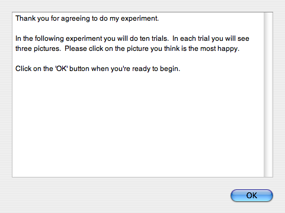

Contentsintroduction CommandsStimulusimages Responsekeys & clicks Otherprocedures Notes |
Command groups: text stimulusA text box looks like this: 
It presents a set piece of text in a scrollable panel, allowing the subject to read the text and click the 'OK' button when they're ready to continue. It's intended for supplying instructions to the subject at the beginning or end of the experiment. When the When the The text is taken from a text file (see stimulus files) which should have a name ending in '.txt', '.text' or '.rtf'. The ideal application to use to prepare text files is 'TextEdit' which is included with every copy of OS X. You can find it in the /Applications folder. If you're preparing plain (unattributed) text, make sure TextEdit is working in 'Plain Text' mode: the item in the 'Format' menu should read 'Make Rich Text'. If you're preparing a rich text file, do the opposite. Commands
Technical notesYou can use any form of text encoding and line-end encoding that TextEdit supports, including Unicode characters. Due to Word converting characters into its own internal format, even text prepared in Word then pasted into a text editor probably won't work correctly -- it's better to stay away from Word entirely. This problem does not occur with other word processing programs like AppleWorks or Pages: you can prepare your text in them and save it in text or rich text format and it should work correctly. See also | ||||||||||||||||||||||||